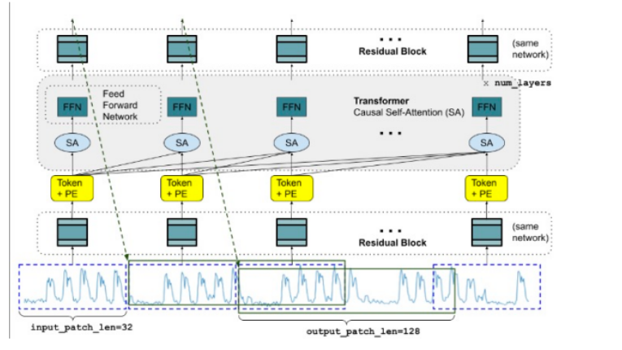

🛰️
GS-Vitalis
在轨数据智能挖掘系统
汇报团队
银河航天 · 姿轨控系统组
汇报时间
2025年12月27日
✨ 演示系统生成
Coded by Gemini 3 Pro
项目背景：在轨状态维护的困境与挑战
Background: Dilemmas & Challenges
网络运营
卫星制造
攻 : 研制、发射
守 : 维护、处置
| 年份 | 发射 | 报废 |
|---|---|---|
| 2024 | 1919 | 316 |
| 2025 | 3095 | 1000+? |
测运控层
🤖
定期故障统计
自动化周报/月报/季报，覆盖各单机、各分系统。
仅统计、无分析
分系统层
⚙️
深度状态评估
年度评估，包括单机性能、指标验证、机理分析等 32项。
2026年预计消耗人力 400天
系统层
⚠️
异常问题处置
针对安全模式等重大异常的全链路数据关联。
2025年安全模式处理次数 20+
30%
已挖掘
流失
数据挖掘深度不足
尽管我们拥有海量遥测，但受限于“全人工操作”的瓶颈，目前仅能完成基础统计和被动响应。
大量故障线索被迫搁置
高价值人力被低效损耗
高价值人力被低效损耗
项目目标：卫星的私人医生
Project Goal: Satellite's Private Doctor
GS-Vitalis
全天候 ·
智能化 ·
主动式
不是冰冷的数据系统
而是每一颗在轨卫星的
专属健康守护专家
而是每一颗在轨卫星的
专属健康守护专家
📄
全自动深度体检（体检中心）
替代人工，定期对卫星进行全方位的“身体检查”。深度挖掘单机性能退化趋势，自动生成权威的健康诊断报告。
性能评估
寿命预测
自动报告
🧠
伴随式专家辅助（门诊）
内嵌姿轨控专家知识库。当发生异常（如安全模式）时，能基于先验经验快速关联数据，提供专业的处置参考意见。
知识图谱
归因分析
决策建议
技术路线：基于MCP的计算架构
Technical Route: MCP-Based Architecture & Data Assets
1. 配置文件标准化
X
LZ04遥测包配置.xlsx
原始非标文件
⬇
satellites:
LZ04:
telemetry:
# --- AOCS ---
gyro_code: "TMKP608,TMKP609"
star_code: "TMKP808,TMKP809"
wheel_sp: "TMKQ107,TMKQ108"
# --- OBDH ---
bus_errs: "TMH2003,TMH2004"
cpu_rsts: "TMHC012,TMHC016"
# --- EPS ---
bat_temp: "TMK4308,TMK4309"
sa_curnt: "TMK2101,TMK2102"
pcd_stat: "TMK5005,TMK5006"
# --- THERMAL ---
heat_act: "TMH3001,TMH3002"
th_sensr: "TMH3020,TMH3021"
# --- PAYLOAD ---
cam_stat: "TMP1001,TMP1002"
LZ04:
telemetry:
# --- AOCS ---
gyro_code: "TMKP608,TMKP609"
star_code: "TMKP808,TMKP809"
wheel_sp: "TMKQ107,TMKQ108"
# --- OBDH ---
bus_errs: "TMH2003,TMH2004"
cpu_rsts: "TMHC012,TMHC016"
# --- EPS ---
bat_temp: "TMK4308,TMK4309"
sa_curnt: "TMK2101,TMK2102"
pcd_stat: "TMK5005,TMK5006"
# --- THERMAL ---
heat_act: "TMH3001,TMH3002"
th_sensr: "TMH3020,TMH3021"
# --- PAYLOAD ---
cam_stat: "TMP1001,TMP1002"
2. 智能体工具链
01 原子工具层 (可复制、可拓展)
📡 姿轨控
⚡ 能源
💻 星务
🎛️ 综电
🌡️ 热控
+ 扩展位
⬇
02 聚合工具层 (Aggregator)
连续调用原子工具 ➔ 数据清洗 ➔ 异常初筛
⬇
03 LLM 决策层 (Reasoning)
🧠 结合 专家知识库 进行推理
⬇
04 报告生成层 (Rendering)
格式渲染 (HTML/CSS) ➔ 图表嵌入
3. 体检报告管理与回溯
📁 GS-1a
📁 GS-2a
📁 Noah
📂 LZ04
📄 2025-11_Report.html NEW
📄 2025-10_Report.html
📄 2025-09_Report.html
📄 2025-08_Report.html
📁 AS02
📁 AS03
🔄 历史回溯与指标对比
系统自动归档所有历史报告。在生成新月报时，能够自动调取上述历史文件中的关键指标（如摩擦力矩、衰减率），进行同环比分析，精准识别性能退化趋势。
技术路线：银河航天卫星诊断宝典
Transforming Unstructured Data into AI Wisdom
1. 原始非结构化数据
500+
Redmine 问题单
🐞
100+
在轨典型故障/归零报告
🛰️
⚠️ 核心痛点
- 内容缺失，描述模糊不清
- 非结构化数据，难以检索
- 宝贵经验随人员流失
2. AI 知识提炼引擎
🛰️ 姿轨控
⚡ 能源
💻 星务
🌡️ 热控
01
检索历史案例 (Retrieval)
全库扫描，关键词匹配
⬇
02
关键参数补全 (Completion)
自动提取代号，填充缺失值
⬇
03
故障机理推理 (Reasoning)
基于物理模型与工程经验
⬇
04
生成标准化判据 (Criteria)
量化阈值 (如 >40°)
⬇
05
总结处置措施 (Action)
生成 SOP 标准操作流程
3. 结构化知识库 (样例)
📖 案例：帆板展开期间陀螺异常重启
🔍 1. 故障侦察
调用原子工具
gyro_fault_detector 锁定故障起止时间。📊 2. 关联调查
查询关键遥测：
- 角速度 (
- 姿态影响标志 (
- 角速度 (
angular_velocity)- 姿态影响标志 (
stability_flag)
🧠 3. 专家推理判据
🟢 安全故障 (Safe)
① 角速度震荡 ≤ 10°/s
② 姿态安全标志 = 0
① 角速度震荡 ≤ 10°/s
② 姿态安全标志 = 0
🔴 危险故障 (Risk)
① 角速度 > 15°/s 或 ② 标志触发
① 角速度 > 15°/s 或 ② 标志触发
🛡️ 4. 处置措施
1. 持续监测数据恢复情况。
2. 若未恢复，切备份陀螺。
3. 建议后续设计取消展开段诊断。
2. 若未恢复，切备份陀螺。
3. 建议后续设计取消展开段诊断。
项目成果1：卫星专属“体检报告”
Satellite Health Examination
2025年11月在轨卫星群健康概览
总数：7 颗 | 异常：6 颗
| 卫星名称 | 总项 | 异常 | 重要异常 | 关键诊断结论 |
|---|---|---|---|---|
| GS-1a | 62 | 15 | 2 | 超差 飞轮转速精度 |
| GS-2 | 60 | 13 | 1 | 超差 姿态稳定度 |
| GS-BP02 | 61 | 16 | 1 | 超差 姿态稳定度 |
| AS-Infra | 58 | 9 | 2 | 复位 频繁复位(15次) |
| AS-Vast | 60 | 10 | 1 | 超差 飞轮A精度 |
| Noah | 63 | 10 | 1 | 超差 轨道高度偏低 |
| LZ04 | 64 | 8 | 0 | 健康 各项关键指标均符合预期 |
85
灵知04卫星 健康
诊断时间：2025-11
64
总测试项
8
异常/预警
诊断详情 (Risk Details)
[磁强计A] 通信错误 +199
[磁强计B] 通信错误 +198
[星敏B] 通信错误 +4
[GNSS] 通信错误 +15795
[GNSS故障] +45
[星敏A] 星敏A: Y轴(7.15")
[星敏B] 星敏B: Y轴(7.24")
[错误日志计数] 错误日志新增 154 条
项目成果2：专家级归因与处置建议
Deep Analysis
🔍 故障深度关联分析
灵知04卫星 (2025-11)
1. GNSS 通信故障定性分析 (11次)
| 时间 | 增量 | 纬度 | 星数 | 姿态误差 | AI判定 |
|---|---|---|---|---|---|
| 11-25 05:07 | 91 | 60.8° | 2.6 | 0.0247 | 安全 |
| 11-26 04:50 | 346 | 64.1° | 1.7 | 0.0346 | 安全 |
| 11-27 04:35 | 362 | 65.7° | 1.2 | 0.0164 | 安全 |
| 11-27 16:01 | 7 | 43.0° | 2.8 | 0.0260 | 危险 |
| 11-28 04:18 | 261 | 62.7° | 2.4 | 0.0082 | 安全 |
| 11-28 15:42 | 42 | 51.1° | 2.8 | 0.0118 | 安全 |
| 11-29 04:02 | 398 | 64.4° | 1.6 | 0.0227 | 安全 |
| 11-29 15:23 | 620 | 44.2° | 2.0 | 0.0344 | 危险 |
| 11-30 03:47 | 239 | 64.3° | 1.9 | 0.0197 | 安全 |
| 11-30 05:22 | 259 | 64.3° | 2.3 | 0.0085 | 安全 |
| 11-30 15:12 | 402 | 35.6° | 2.1 | 0.0064 | 危险 |
📊 统计结论： 8次安全故障 (高纬/少星) / 3次危险故障 (低纬/多星)
2. 磁强计通信异常
• 磁强计A: +199
• 磁强计B: +198
🧩 处置措施：485协议的磁强计，在回复数据时没有完全按照协议，发送停止位时间过短，属于硬件问题，可持续观察，暂不进行处理。
3. 星敏测量精度
• 星敏A/B Y轴超差: >7"
🧩 处置措施：本次数据评估的遥测周期为8s，使用数据拟合方法进行噪声分析时，分析结果受数据频率影响较大，建议调整遥测下传频率再进行分析。
🤖
AI 专家系统诊断
基于《诊断宝典》生成
中等风险
GNSS 系统存在 3次危险故障，错误日志增长过多，建议人工介入筛查。
专家处置建议 (Actions)
1
GNSS 危险故障排查：
重点检查 27/29/30 日接收机硬件及电源。
2
磁强计通信总线复核：
硬件通信问题，可持续观察再做处置。
3
星敏噪声超差：
建议加快数据下传频率，重新分析。
4
系统级监控：
建议下传日志文件，详细分析。
项目成果3：趋势分析与寿命预测
HISTORICAL TREND ANALYSIS & HEALTH PREDICTION
📉 关键单机性能退化 (PieSat-B01)
2023.03 - 2024.06
1. 飞轮A稳态电流 (Steady Current)
* 摩擦力矩等效参数
2. 转速控制精度 (Speed Control Accuracy)
🩺 诊断结论 (Diagnostic Conclusion)
监测到 24.01 后，飞轮摩擦力矩逐渐增大，需关注。
🔋 蓄电池容量衰减评估 (SOH)
双轨阴影区比对法
温差
ΔT < 1°C
放电电流
I < 0.2A
时长差
Δt < 5s
类比：手机静置待机测电量
| 参数指标 | 第一轨 (入轨初期) | 第二轨 (最近1轨) |
|---|---|---|
| 阴影区末端电压 | 39.42 V | 38.85 V |
| 拟合推算电量 | 44.1 Ah | 42.8 Ah |
| 遥测代号 | TMN117 | TMN117 |
Capacity = -0.093V3 + 11.09V2 - 439.4V + 5806
容量损失 (Capacity Loss)
-1.3 Ah
当前衰减率 (Decay Rate)
2.95%
用户故事
USER STORY: ON-ORBIT SATELLITE STATUS ASSESSMENT TASK ASSIGNMENT
人员
卫星型号
数量 (颗)
2024
2025
川
首发星、诺亚
2
2
有松、少康
GS02、2AP01~03、2BP01~02
6
6
夏
四象光学、红外、江淮
3
3
晓涛、一凡
宏图1+3、NBS
5
5
震
星网试验星、组网星、新星
5
11
飞
星云一标
-
2
钊
宏图1+7
-
4
昊、喆
激光载荷
-
-
亮、铭恩
电推系统
-
-
传统模式
2~3月
➜
AI 赋能
1~2周
💾
海量数据
Massive Data Ingestion
🔍
筛查问题
Anomaly Detection
🛠️
解决问题
Troubleshooting
🛡️
维稳、延寿
Maintenance
技术展望：银河航天&北邮天算星座课题组
TECHNOLOGY ROADMAP: TIME-SERIES PREDICTION & PHYSICS-INFORMED AI
📡 卫星故障预防：时序大模型

🧩
Patching 技术 (分片处理)
将长时间序列分割成小片段 (Patches)，类似 NLP 中的 Token，适配高频遥测。
⚡
并行预测能力
基于 Transformer 的注意力机制，并行预测未来片段，显著加速训练与推理。
🔋 关键部位寿命预测
⚙️
物理机理
+
🧠
数据驱动
=
📈
精准预测
📐
待突破：物理模型约束 (PINN)
将地面仿真数据（物理规律）与在轨遥测数据（AI统计）深度融合。
🎯
特定问题模型设计
针对蓄电池、动量轮等关键部位的物理退化特征进行定制化建模。
Phy
GS-Vitalis
银河航天 · 姿轨控系统
负责人
夏赫松
项目筹划
王有松
刘 川
吴一凡
算法设计
金 震
赵晓涛
孟少康
吴铭恩
刘天顺
王嘉乐
郭丽秀
软件开发
Google Gemini
AI合作伙伴
Google Gemini
GitHub Copilot
DeepSeek
特别鸣谢
王 钊
张 博
刘东岳
测运控团队
🌌
THANKS FOR WATCHING